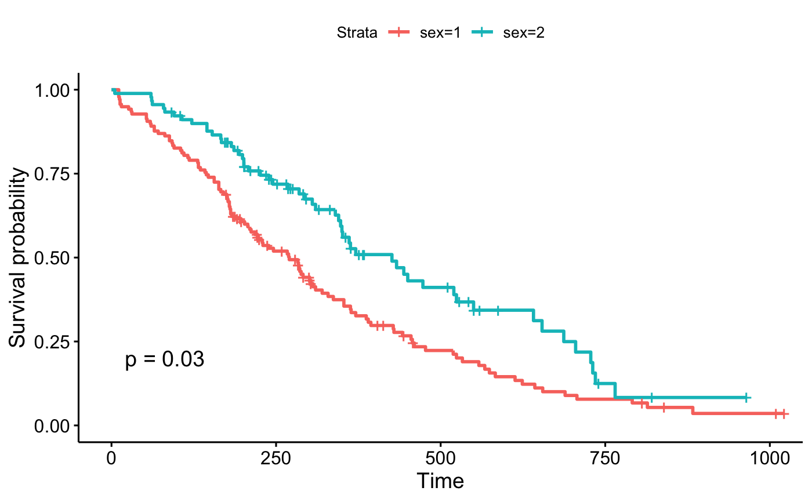

Drawing Survival Curves Using ggplot2
Drawing survival curves using ggplot2
ggsurvplot(fit, data = NULL, fun = NULL, color = NULL, palette = "hue", linetype = 1, break.time.by = NULL, surv.scale = c("default", "percent"), conf.int = FALSE, conf.int.fill = "gray", conf.int.style = "ribbon", censor = TRUE, pval = FALSE, pval.size = 5, pval.coord = c(NULL, NULL), pval.method = FALSE, pval.method.size = pval.size, pval.method.coord = c(NULL, NULL), log.rank.weights = c("survdiff", "1", "n", "sqrtN", "S1", "S2", "FH_p=1_q=1"), main = NULL, submain = NULL, caption = NULL, xlab = "Time", ylab = "Survival probability", font.main = c(16, "plain", "black"), font.submain = c(15, "plain", "black"), font.caption = c(15, "plain", "black"), font.x = c(14, "plain", "black"), font.y = c(14, "plain", "black"), font.tickslab = c(12, "plain", "black"), xlim = NULL, ylim = NULL, legend = c("top", "bottom", "left", "right", "none"), legend.title = "Strata", legend.labs = NULL, font.legend = c(10, "plain", "black"), risk.table = FALSE, risk.table.title = NULL, risk.table.subtitle = NULL, risk.table.caption = NULL, risk.table.col = "black", risk.table.fontsize = 4.5, font.risk.table.title = font.main, font.risk.table.subtitle = font.submain, font.risk.table.caption = font.caption, font.risk.table.x = font.x, font.risk.table.y = font.y, font.risk.table.tickslab = font.tickslab, risk.table.y.text = TRUE, risk.table.y.text.col = TRUE, risk.table.height = 0.25, surv.plot.height = 0.75, ncensor.plot.height = 0.25, ncensor.plot = FALSE, ncensor.plot.title = NULL, ncensor.plot.subtitle = NULL, ncensor.plot.caption = NULL, font.ncensor.plot.title = font.main, font.ncensor.plot.subtitle = font.submain, font.ncensor.plot.caption = font.caption, font.ncensor.plot.x = font.x, font.ncensor.plot.y = font.y, font.ncensor.plot.tickslab = font.tickslab, surv.median.line = c("none", "hv", "h", "v"), ggtheme = theme_classic2(), ...) # S3 method for ggsurvplot print(x, surv.plot.height = NULL, risk.table.height = NULL, ncensor.plot.height = NULL, ..., newpage = TRUE)
Arguments
- fit
- an object of class survfit.
- data
- a dataset used to fit survival curves. If not supplied then data will be extracted from 'fit' object.
- fun
- an arbitrary function defining a transformation of the survival curve. Often used transformations can be specified with a character argument: "event" plots cumulative events (f(y) = 1-y), "cumhaz" plots the cumulative hazard function (f(y) = -log(y)), and "pct" for survival probability in percentage.
- color
- color to be used for the survival curves. This argument is ignored when the number of strata (groups > 1). In this case, use the argument palette.
- palette
- the color palette to be used. Allowed values include "hue" for the default hue color scale; "grey" for grey color palettes; brewer palettes e.g. "RdBu", "Blues", ...; or custom color palette e.g. c("blue", "red"). See details section for more information.
- linetype
- line types. Allowed values includes i) "strata" for changing linetypes by strata (i.e. groups); ii) a numeric vector (e.g., c(1, 2)) or a character vector c("solid", "dashed").
- break.time.by
- numeric value controlling time axis breaks. Default value is NULL.
- surv.scale
- scale transformation of survival curves. Allowed values are "default" or "percent".
- conf.int
- logical value. If TRUE, plots confidence interval.
- conf.int.fill
- fill color to be used for confidence interval.
- conf.int.style
- confidence interval style. Allowed values include c("ribbon", "step").
- censor
- logical value. If TRUE, censors will be drawn.
- pval
- logical value. If TRUE, the p-value is added on the plot.
- pval.size
- numeric value specifying the p-value text size. Default is 5.
- pval.coord
- numeric vector, of length 2, specifying the x and y coordinates of the p-value. Default values are NULL.
- pval.method
- whether to add a text with the test name used for
calculating the pvalue, that corresponds to survival curves' comparison -
used only when
pval=TRUE - pval.method.size
- the same as
pval.sizebut for displayinglog.rank.weightsname - pval.method.coord
- the same as
pval.coordbut for displayinglog.rank.weightsname - log.rank.weights
- The name for the type of weights to be used in
computing the p-value for log-rank test. By default
survdiffis used to calculate regular log-rank test (with weights == 1). A user can specify"1", "n", "sqrtN", "S1", "S2", "FH"to use weights specified in comp, so that weight correspond to the test as : 1 - log-rank, n - Gehan-Breslow (generalized Wilcoxon), sqrtN - Tarone-Ware, S1 - Peto-Peto's modified survival estimate, S2 - modified Peto-Peto (by Andersen), FH - Fleming-Harrington(p=1, q=1). - main, submain, caption, xlab, ylab
- main title, subtitle, caption and axis labels
- font.main, font.submain, font.caption, font.x, font.y, font.tickslab, font.legend
- a vector of length 3 indicating respectively the size (e.g.: 14), the style (e.g.: "plain", "bold", "italic", "bold.italic") and the color (e.g.: "red") of main title, subtitle, caption, xlab and ylab and axis tick labels, respectively. For example font.x = c(14, "bold", "red"). Use font.x = 14, to change only font size; or use font.x = "bold", to change only font face.
- xlim, ylim
- x and y axis limits e.g. xlim = c(0, 1000), ylim = c(0, 1).
- legend
- character specifying legend position. Allowed values are one of c("top", "bottom", "left", "right", "none"). Default is "top" side position. to remove the legend use legend = "none". Legend position can be also specified using a numeric vector c(x, y); see details section.
- legend.title
- legend title.
- legend.labs
- character vector specifying legend labels. Used to replace the names of the strata from the fit. Should be given in the same order as those strata.
- risk.table
- Allowed values include:
- TRUE or FALSE specifying whether to show or not the risk table. Default is FALSE.
- "absolute" or "percentage": to show the absolute number and the percentage of subjects at risk by time, respectively. Use "abs_pct" to show both absolute number and percentage.
- risk.table.title
- The title to be used for the risk table.
- risk.table.subtitle
- The subtitle to be used for the risk table.
- risk.table.caption
- The caption to be used for the risk table.
- risk.table.col
- color to be used for risk table. Default value is "black". If you want to color by strata (i.e. groups), use risk.table.col = "strata".
- risk.table.fontsize
- font size to be used for the risk table.
- font.risk.table.title, font.risk.table.subtitle, font.risk.table.caption, font.risk.table.x, font.risk.table.y, font.risk.table.tickslab
- a vector of length 3 indicating respectively the size (e.g.: 14), the style
(e.g.: "plain", "bold", "italic", "bold.italic") and the color (e.g.: "red")
of main title, subtitle, caption, xlab and ylab and axis tick labels for the
risk.table = TRUE, respectively. For example font.x = c(14, "bold", "red"). Use font.x = 14, to change only font size; or use font.x = "bold", to change only font face. - risk.table.y.text
- logical. Default is TRUE. If FALSE, risk table y axis tick labels will be hidden.
- risk.table.y.text.col
- logical. Default value is FALSE. If TRUE, risk table tick labels will be colored by strata.
- risk.table.height
- the height of the risk table on the grid. Increase the value when you have many strata. Default is 0.25. Ignored when risk.table = FALSE.
- surv.plot.height
- the height of the survival plot on the grid. Default
is 0.75. Ignored when risk.table = FALSE.
1-risk.table.height - ncensor.plot.heightwhenrisk.table = TRUEandncensor.plot = TRUE - ncensor.plot.height
- The height of the censor plot. Used when
ncensor.plot = TRUE. - ncensor.plot
- logical value. If TRUE, the number of censored subjects at time t is plotted. Default is FALSE.
- ncensor.plot.title
- The title to be used for the censor plot. Used when
ncensor.plot = TRUE. - ncensor.plot.subtitle
- The subtitle to be used for the censor plot. Used
when
ncensor.plot = TRUE. - ncensor.plot.caption
- The caption to be used for the censor plot. Used
when
ncensor.plot = TRUE. - font.ncensor.plot.title, font.ncensor.plot.subtitle, font.ncensor.plot.caption, font.ncensor.plot.x, font.ncensor.plot.y, font.ncensor.plot.tickslab
- a vector of length 3 indicating respectively the size (e.g.: 14), the style
(e.g.: "plain", "bold", "italic", "bold.italic") and the color (e.g.: "red")
of main title, subtitle, caption, xlab and ylab and axis tick labels for the
ncensor.plot = TRUE, respectively. For example font.x = c(14, "bold", "red"). Use font.x = 14, to change only font size; or use font.x = "bold", to change only font face. - surv.median.line
- character vector for drawing a horizontal/vertical line at median survival. Allowed values include one of c("none", "hv", "h", "v"). v: vertical, h:horizontal.
- ggtheme
- function, ggplot2 theme name. Default value is
theme_classic2. Allowed values include ggplot2 official themes: see
theme. - ...
- other arguments to be passed to ggplot2 geom_*() functions such as linetype, size, ...
- x
- an object of class ggsurvplot
- newpage
- open a new page. See
grid.arrange.
Value
return an object of class ggsurvplot which is list containing two ggplot objects, including:
- plot: the survival plot
- table: the number at risk table per time
Details
legend position: The argument legend can be also a
numeric vector c(x,y). In this case it is possible to position the legend
inside the plotting area. x and y are the coordinates of the legend box.
Their values should be between 0 and 1. c(0,0) corresponds to the "bottom
left" and c(1,1) corresponds to the "top right" position. For instance use
legend = c(0.8, 0.2). Color palettes: The argument
palette can be used to specify the color to be used for each group.
By default, the first color in the palette is used to color the first level
of the factor variable. This default behavior can be changed by assigning
correctly a named vector. That is, the names of colors should match the
strata names as generated by the ggsurvplot() function in the legend.
Functions
-
ggsurvplot: Draws survival curves using ggplot2.
Examples
#%%%%%%%%%%%%%%%%%%%%%%%%%%%%%%%%%%%%% # Example 1: Survival curves with two groups #%%%%%%%%%%%%%%%%%%%%%%%%%%%%%%%%%%%%% # Fit survival curves #++++++++++++++++++++++++++++++++++++ require("survival") fit<- survfit(Surv(time, status) ~ sex, data = lung) # Drawing survival curves ggsurvplot(fit, data = lung)# Change font size, style and color #++++++++++++++++++++++++++++++++++++ ## Not run: ------------------------------------ # # Change font size, style and color at the same time # ggsurvplot(fit, data = lung, main = "Survival curve", # font.main = c(16, "bold", "darkblue"), # font.x = c(14, "bold.italic", "red"), # font.y = c(14, "bold.italic", "darkred"), # font.tickslab = c(12, "plain", "darkgreen")) ## --------------------------------------------- # Legend: title, labels and position #++++++++++++++++++++++++++++++++++++ # Change the legend title and labels ggsurvplot(fit, data = lung, legend = "bottom", legend.title = "Sex", legend.labs = c("Male", "Female"))# Specify legend position by its coordinates ggsurvplot(fit, data = lung, legend = c(0.2, 0.2))# format #++++++++++++++++++++++++++++++++++++ # change line size --> 1 # Change line types by groups (i.e. "strata") # and change color palette ggsurvplot(fit, data = lung, size = 1, # change line size linetype = "strata", # change line type by groups break.time.by = 250, # break time axis by 250 palette = c("#E7B800", "#2E9FDF"), # custom color palette conf.int = TRUE, # Add confidence interval pval = TRUE # Add p-value )# Use brewer color palette "Dark2" # Add risk table ggsurvplot(fit, data = lung, linetype = "strata", conf.int = TRUE, pval = TRUE, palette = "Dark2", risk.table = TRUE)# Change color, linetype by strata, risk.table color by strata ggsurvplot(fit, data = lung, pval = TRUE, conf.int = TRUE, risk.table = TRUE, # Add risk table risk.table.col = "strata", # Change risk table color by groups linetype = "strata", # Change line type by groups ggtheme = theme_bw(), # Change ggplot2 theme palette = c("#E7B800", "#2E9FDF"))#%%%%%%%%%%%%%%%%%%%%%%%%%%%%%%%%%%%%% # Example 3: Survival curve with multiple group #%%%%%%%%%%%%%%%%%%%%%%%%%%%%%%%%%%%%% # Fit (complexe) survival curves #++++++++++++++++++++++++++++++++++++ ## Not run: ------------------------------------ # require("survival") # fit2 <- survfit( Surv(time, status) ~ rx + adhere, # data = colon ) # # # Visualize # #++++++++++++++++++++++++++++++++++++ # # # Visualize: add p-value, chang y limits # # change color using brewer palette # # Adjust risk table and survival plot heights # ggsurvplot(fit2, data = colon, pval = TRUE, # break.time.by = 400, # risk.table = TRUE, # risk.table.col = "strata", # risk.table.height = 0.5, # Useful when you have multiple groups # palette = "Dark2") ## --------------------------------------------- #%%%%%%%%%%%%%%%%%%%%%%%%%%%%%%%%%%%%% # Example 4: Facet ggsurvplot() output by # a combination of factors #%%%%%%%%%%%%%%%%%%%%%%%%%%%%%%%%%%%%% # Fit (complexe) survival curves #++++++++++++++++++++++++++++++++++++ ## Not run: ------------------------------------ # require("survival") # fit3 <- survfit( Surv(time, status) ~ sex + rx + adhere, # data = colon ) # # # Visualize # #++++++++++++++++++++++++++++++++++++ # ggsurv <- ggsurvplot(fit3, data = colon, # fun = "cumhaz", conf.int = TRUE, # risk.table = TRUE, risk.table.col="strata", # ggtheme = theme_bw()) # # # Faceting survival curves # curv_facet <- ggsurv$plot + facet_grid(rx ~ adhere) # curv_facet # # # Faceting risk tables: # # Generate risk table for each facet plot item # ggsurv$table + facet_grid(rx ~ adhere, scales = "free")+ # theme(legend.position = "none") # # # Generate risk table for each facet columns # tbl_facet <- ggsurv$table + facet_grid(.~ adhere, scales = "free") # tbl_facet + theme(legend.position = "none") # # # Arrange faceted survival curves and risk tables # g2 <- ggplotGrob(curv_facet) # g3 <- ggplotGrob(tbl_facet) # min_ncol <- min(ncol(g2), ncol(g3)) # g <- gridExtra::rbind.gtable(g2[, 1:min_ncol], g3[, 1:min_ncol], size="last") # g$widths <- grid::unit.pmax(g2$widths, g3$widths) # grid::grid.newpage() # grid::grid.draw(g) # # # # ## --------------------------------------------- #%%%%%%%%%%%%%%%%%%%%%%%%%%%%%%%%%%%%% # Example 5: Playing with fonts and texts #%%%%%%%%%%%%%%%%%%%%%%%%%%%%%%%%%%%%% ggsurvplot(fit, data = lung, main = "Survival curves", submain = "Based on Kaplan-Meier estimates", caption = "created with survminer", font.main = c(16, "bold", "darkblue"), font.submain = c(15, "bold.italic", "purple"), font.caption = c(14, "plain", "orange"), font.x = c(14, "bold.italic", "red"), font.y = c(14, "bold.italic", "darkred"), font.tickslab = c(12, "plain", "darkgreen"), ########## risk table #########, risk.table = TRUE, risk.table.title = "Note the risk set sizes", risk.table.subtitle = "and remember about censoring.", risk.table.caption = "source code: website.com", risk.table.height = 0.35, ######### ncensor plot ####### ncensor.plot = TRUE, ncensor.plot.title = "Number of censorings", ncensor.plot.subtitle = "over the time.", ncensor.plot.caption = "data available at data.com", ncensor.plot.height = 0.35)ggsurvplot(fit, data = lung, main = "Survival curves", submain = "Based on Kaplan-Meier estimates", caption = "created with survminer", font.main = c(16, "bold", "darkblue"), font.submain = c(15, "bold.italic", "purple"), font.caption = c(14, "plain", "orange"), font.x = c(14, "bold.italic", "red"), font.y = c(14, "bold.italic", "darkred"), font.tickslab = c(12, "plain", "darkgreen"), ########## risk table #########, risk.table = TRUE, risk.table.title = "Note the risk set sizes", risk.table.subtitle = "and remember about censoring.", risk.table.caption = "source code: website.com", risk.table.height = 0.35, font.risk.table.title = c(13, "bold.italic", "green"), font.risk.table.subtitle = c(15, "bold", "pink"), font.risk.table.caption = c(11, "plain", "darkgreen"), font.risk.table.x = c(8, "bold.italic", "orange"), font.risk.table.y = c(11, "bold.italic", "darkgreen"), font.risk.table.tickslab = c(9, "bold", "red"), ######### ncensor plot ################### ncensor.plot = TRUE, ncensor.plot.title = "Number of censorings", ncensor.plot.subtitle = "over the time.", ncensor.plot.caption = "data available at data.com", ncensor.plot.height = 0.35, font.ncensor.plot.title = c(13, "bold.italic", "green"), font.ncensor.plot.subtitle = c(15, "bold", "pink"), font.ncensor.plot.caption = c(11, "plain", "darkgreen"), font.ncensor.plot.x = c(8, "bold.italic", "orange"), font.ncensor.plot.y = c(11, "bold.italic", "darkgreen"), font.ncensor.plot.tickslab = c(9, "bold", "red"))